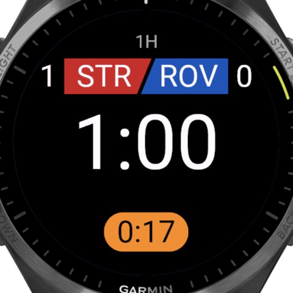

Every clock you keep
The match clock, added time once the period's length is up, and a stoppage clock you start and stop with one press. Turn stoppage tracking off for matches where you don't keep it, and the screen keeps to what you use.
- A halfway break for drinks or cooling, due at the middle of each period and counted down, and added on as stoppage if you like.
- A clock that stops, for high school (NFHS) and college (NCAA) games where you keep the time: set the format's Clock to Stops when play stops and Start/Stop stops the match clock, which turns orange, and starts it again at the restart. Recording a goal or card stops it too (you can turn that off), as does an injury and the halfway break. There's no added time: the period ends when its clock reaches the length, and the times in your report are the clock's. The high school and college formats are ready to pick when you set up a match.
- Half-time and the break between periods, counting down or up.
- Halves, quarters, three periods or one: a tournament game of a single period has no half-time, and extra time and penalties still follow it.
- The added time left: once the period's length is up, the stoppage pill counts down the added time still to play, holding still while you stop for more, so there's no sum to do in your head. At 0:00 the watch vibrates; past it the pill shows the time over, "+0:05".
- Vibrations at the end of each period, when the added time is used up, when a break is due and as a stoppage reminder, each one you can switch off. With stoppage tracked, the end of the period is one buzz, as added time starts; the one that says added time is up repeats until you press a button. With no stoppage time to add, the end of the period repeats until you press a button instead.
- Clocks that keep time even if the screen sleeps or the app closes mid-match: they're worked out from when the period started, not counted.
- Adjust clock in the game menu, for a clock started late or one that must match the stadium's: set the period's minutes and seconds, check the change ("+0:40") and every clock, alert and break moves with it. With stoppage tracked, Adjust added time corrects a stoppage started or ended late. Both show in the match's events and the report.
- Suspend match for a lightning or weather delay: every clock stops where it is, the Suspended screen counts how long it's been, and for lightning a 30-minute countdown that Lightning again starts over, with a vibration when it's done. Cards can still be shown; Resume carries the period on from where it stopped, so the delay is neither played time nor added time. It shows in the match's events and the report ("Suspended 34:12 · Lightning"), and your distance and speeds leave it out. If play can't restart, abandon from there.
